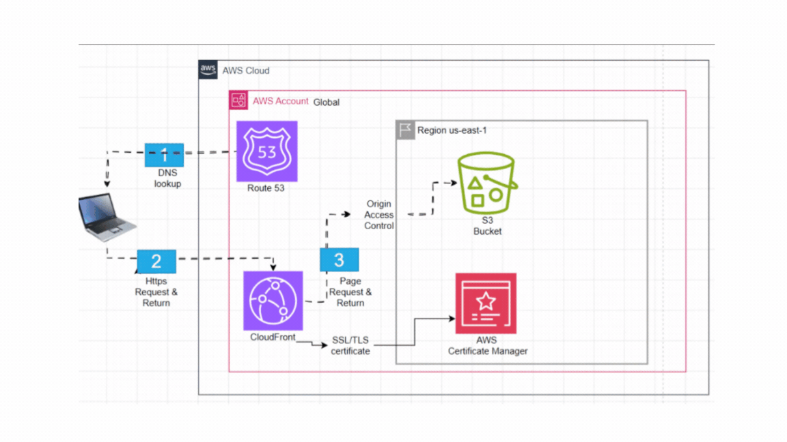

Build a static website for a public portfolio, stored in Amazon S3 and delivered by Amazon CloudFront. It must open on any device, run on my own domain over HTTPS, need no servers to patch, keep its S3 bucket private and cost very little.
How would you host a portfolio website like this?
- Key decision
- Static hosting on an Amazon S3 bucket instead of a server
- Stack
- Amazon S3, Route 53, Amazon CloudFront, AWS Certificate Manager (ACM)
- Monthly cost
- Under $1 (estimate)
- Status
- Live on HTTPS; bucket private

Figure 1 — The request path, animated: Amazon Route 53 finds the site, Amazon CloudFront serves it over HTTPS with an AWS Certificate Manager (ACM) certificate, and only CloudFront can read the private Amazon S3 bucket, through Origin Access Control (OAC).
Figure 2 — Four stages, in the order I built them. I opened the site after each one, so a failure pointed to the last change. The site is only files, so it needs no server. OAC is Origin Access Control.
Proof: https://appcomplish.click returns HTTP 200 through CloudFront, and so does https://www.appcomplish.click. The HTTP address redirects to HTTPS.
AWS services in this design and what each does
| Service | Purpose here |
|---|---|
| Amazon Route 53 | DNS: sends appcomplish.click and www to CloudFront. |
| Amazon CloudFront | Global content delivery: serves the site over HTTPS from edge locations and caches the files. |
| AWS Certificate Manager (ACM) | The certificate for the HTTPS handshake (the padlock), attached to the CloudFront distribution. CloudFront requires the certificate to be requested in us-east-1 (N. Virginia), even though CloudFront is global. |
| Origin Access Control (OAC) | A CloudFront feature, not part of ACM. It controls how CloudFront signs requests to its origin, here the S3 bucket, so only this distribution can read it. |
| Amazon S3 | Stores the site files in a private bucket with Block Public Access on. |
Problems I Hit and How I Fixed Them
The site broke when I made the bucket private
Trying to: make the S3 bucket private so only CloudFront can read it.
What happened: after I turned on S3 Block Public Access, https://appcomplish.click
returned an S3 AccessDenied error, although the HTTP to HTTPS redirect still worked.
Why: the origin's Origin access setting was still Public, so
CloudFront sent unsigned requests, which a private bucket refuses.
- In CloudFront → my distribution → Origins → Edit the S3 origin.
- Set the origin domain to the bucket's regular endpoint (not the
s3-websiteone). - Origin access → Origin access control settings → create an OAC that signs requests.
- Save, then copy the bucket policy CloudFront generates.
- In S3 → bucket → Permissions → Bucket policy: paste it. It lets only
cloudfront.amazonaws.comcalls3:GetObject, limited by anAWS:SourceArncondition to my one distribution. - Wait for the distribution to show Deployed, then reload the site.
Lesson: a working redirect says nothing about the origin.
www.appcomplish.click showed "not secure"
Trying to: make www.appcomplish.click open the site over HTTPS, the same as the bare domain.
What happened: after I created the Route 53 record for www, the browser said the
connection was not secure.
Why: CloudFront only answers for names listed under the distribution's Alternate domain names, and www was not listed, so it refused the secure connection. The certificate was
not the cause: it already covered www through *.appcomplish.click.
- Route 53 → Hosted zones →
appcomplish.click→ Create record: namewww, type A, Alias on, route to my CloudFront distribution. - CloudFront → my distribution → General → Settings → Edit → Alternate domain names → Add item:
www.appcomplish.click. - Save changes, wait for the distribution to show Deployed, then reload the site.
| Option | Why or why not |
|---|---|
| Public bucket behind CloudFront | HTTPS works, but visitors can skip CloudFront and read S3 directly. |
| Origin Access Identity (OAI) | The older private-bucket method. AWS now recommends OAC, and OAI cannot read buckets encrypted with AWS Key Management Service keys. |
| Origin Access Control (OAC) Best fit | The bucket stays private, CloudFront signs each request, and there is no secret to store. |
Tradeoffs: OAC needs the bucket's regular endpoint, not the website endpoint, and a missing file then returns 403 instead of 404 until I add a CloudFront custom error response. Source: Restricting access to an S3 origin
Design Considerations
| Category | Decision | Status |
|---|---|---|
| Requirements & workload | Browsers, low traffic, static content, no logins. | Addressed |
| Scalability & performance | CloudFront caches files at the edge. Latency not measured yet. | Addressed |
| Availability & fault tolerance | No servers to fail, and S3 Standard stores objects across multiple Availability Zones per AWS. One bucket and DNS remain single points. | Partly addressed |
| Data & consistency | n/a — static files only; no database or shared state. | n/a |
| Security | HTTPS through ACM (the certificate must be created in us-east-1); private bucket via OAC. ACM handles the HTTPS handshake with the visitor. OAC is separate: it controls how CloudFront reaches its origin, here the S3 bucket, by signing each request with AWS Signature Version 4, and the bucket policy trusts only this distribution, so direct S3 URLs are denied. See above. | Addressed |
| Observability | Access logs and alarms are not set up yet. | Not addressed yet |
| Deployment & DevOps | GitHub Actions deploys on merge (CI/CD case study). Next time I would start with Terraform. | Addressed |
| Cost & trade-offs | Under $1 a month in total (estimate): S3, Route 53, and CloudFront's Free plan, which costs $0 a month. Rejected: EC2 or Lightsail, about $5–12 plus patching; AWS Amplify Hosting, which hides the AWS pieces I want to learn; a separate AWS Web Application Firewall (WAF), which adds fees a static site does not need. Sources: S3 · CloudFront · Route 53 · WAF · Lightsail · EC2 | Addressed |